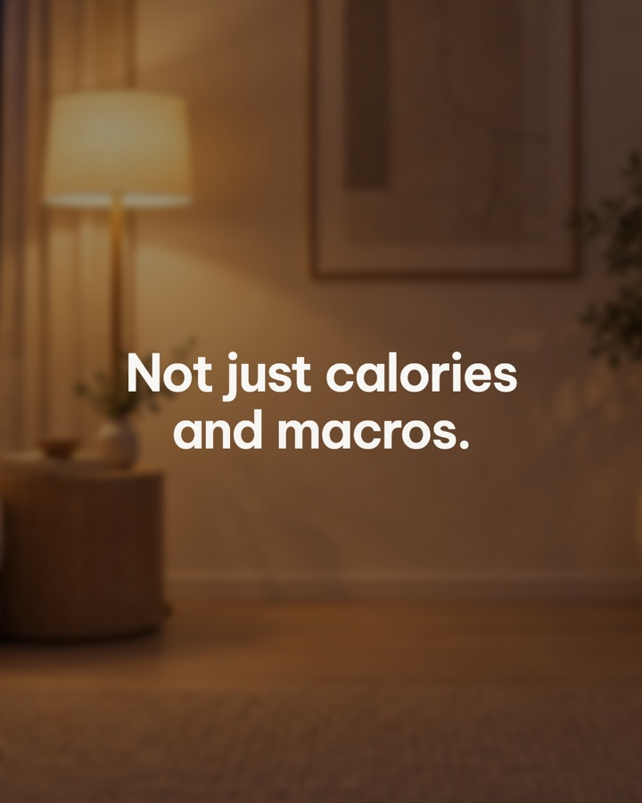
"Not just calories and macros." in the bedroom.
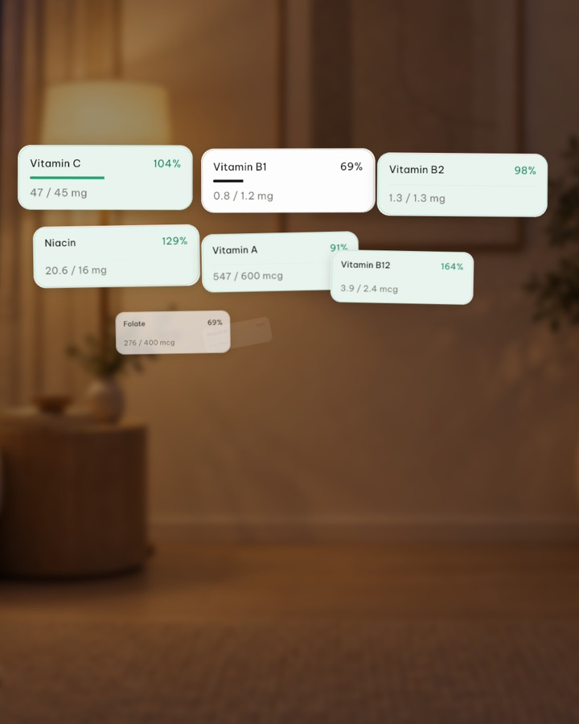
The Nutrition screen's own tiles burst out.
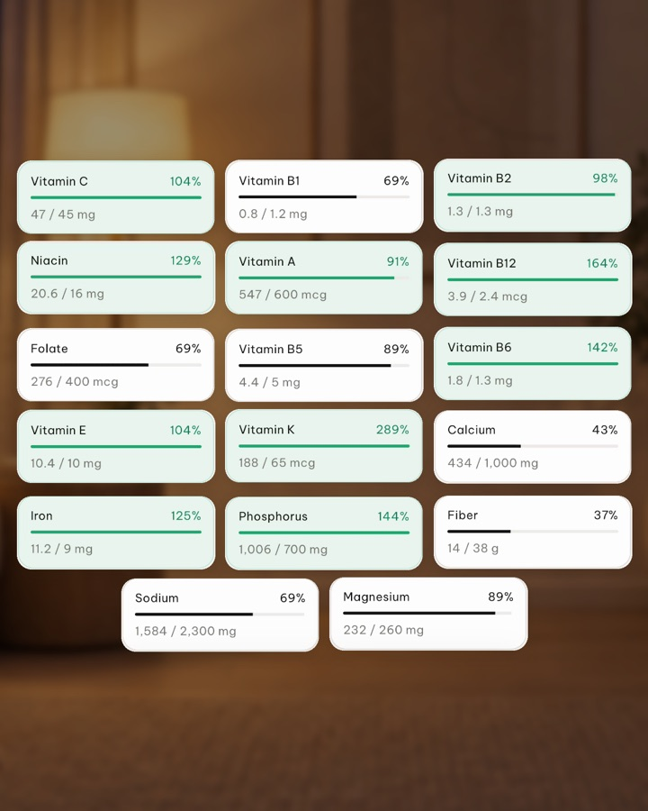
All 17 vitamins and minerals, every bar drawn.
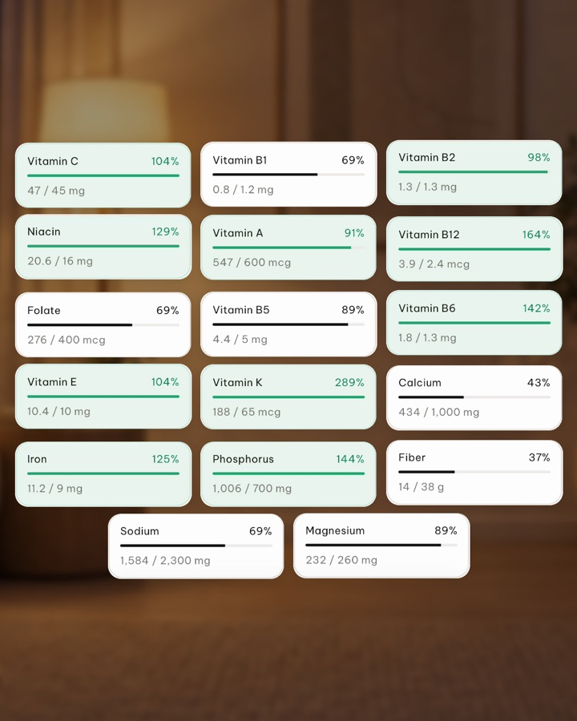
The wall holds.
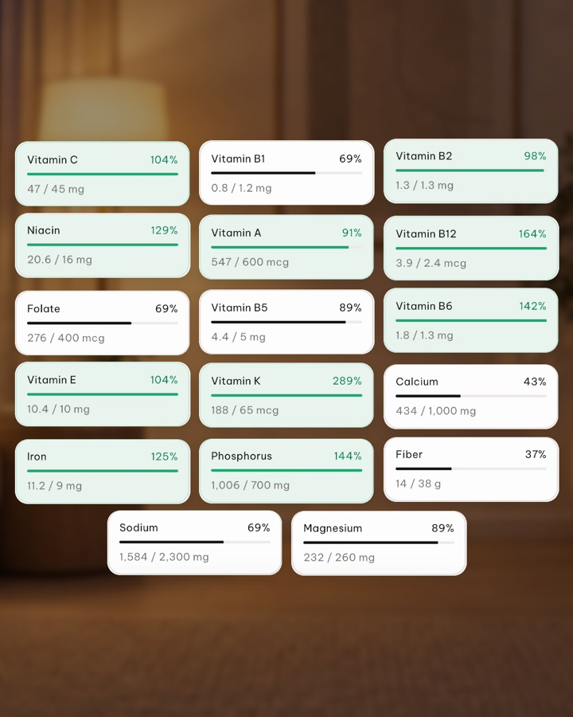
Still holding.
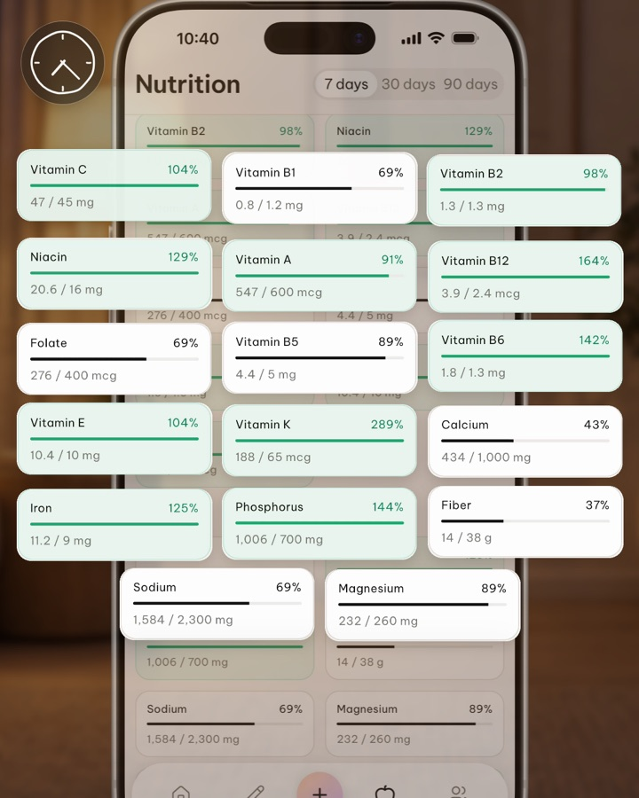
Then every tile flies back to its place on the phone.
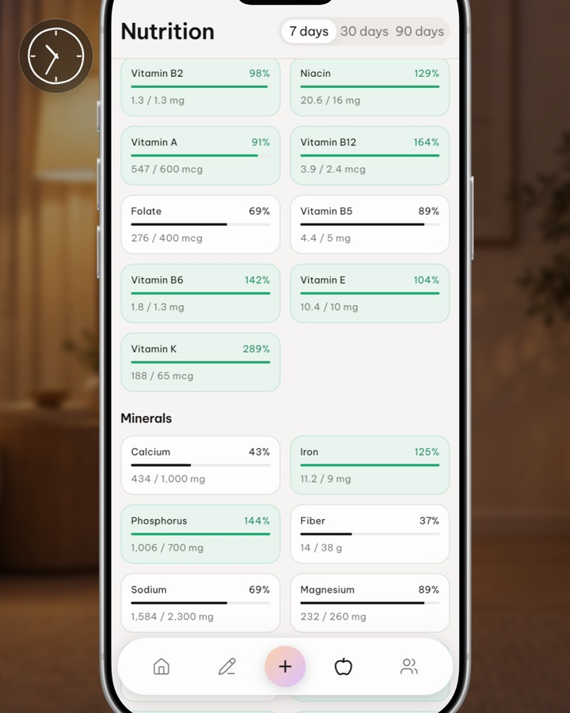
The real Nutrition screen.
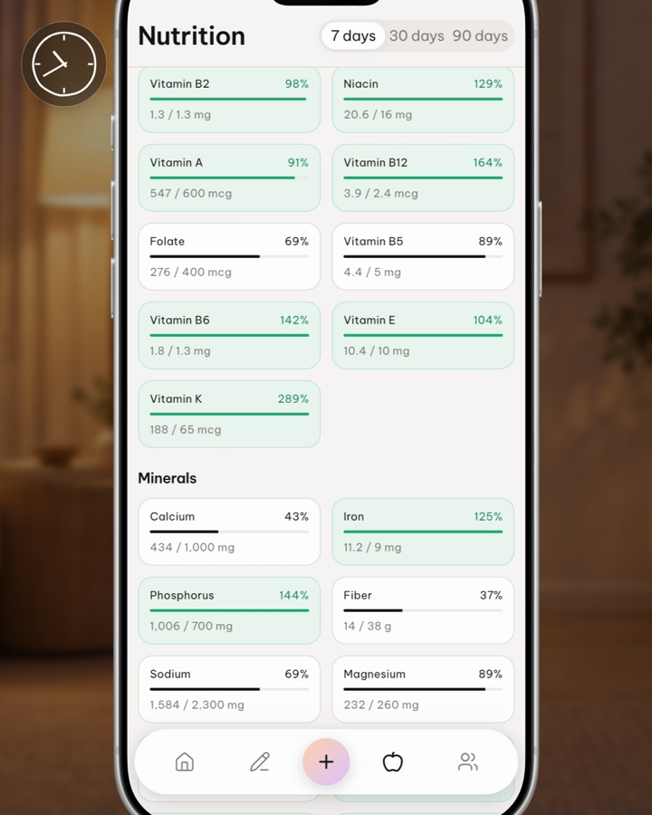
The pointer heads for Home.
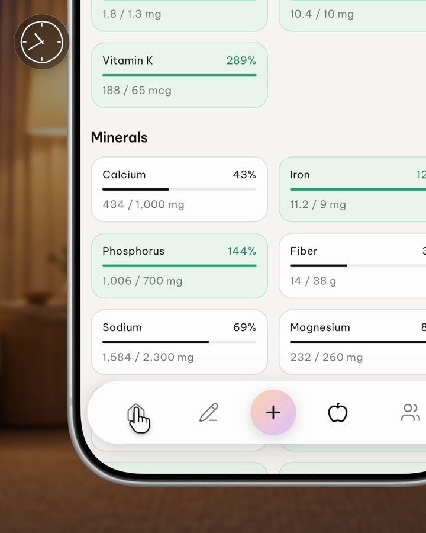
Tap Home.
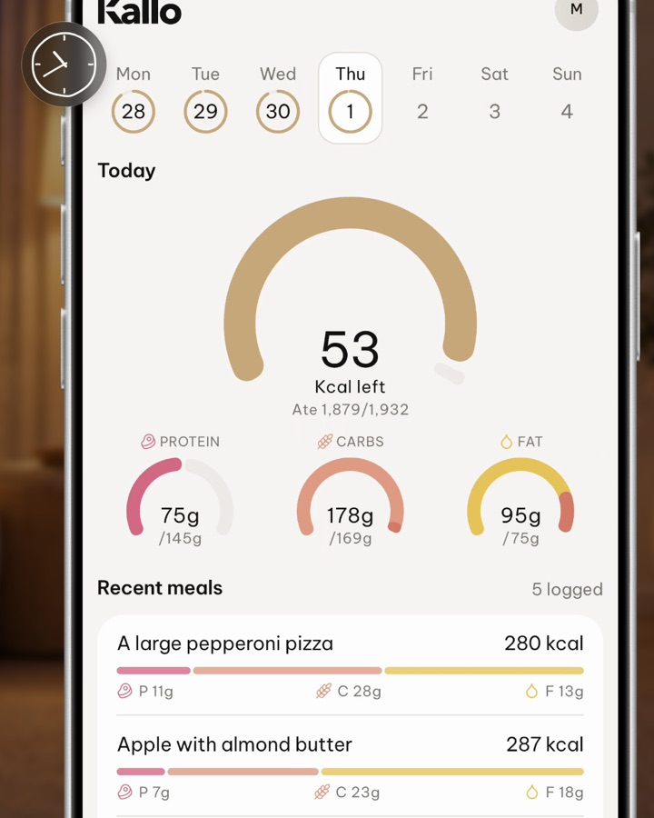
Home; the camera lands on the Kallo wordmark.
The wordmark lifts to the centre; the light returns.
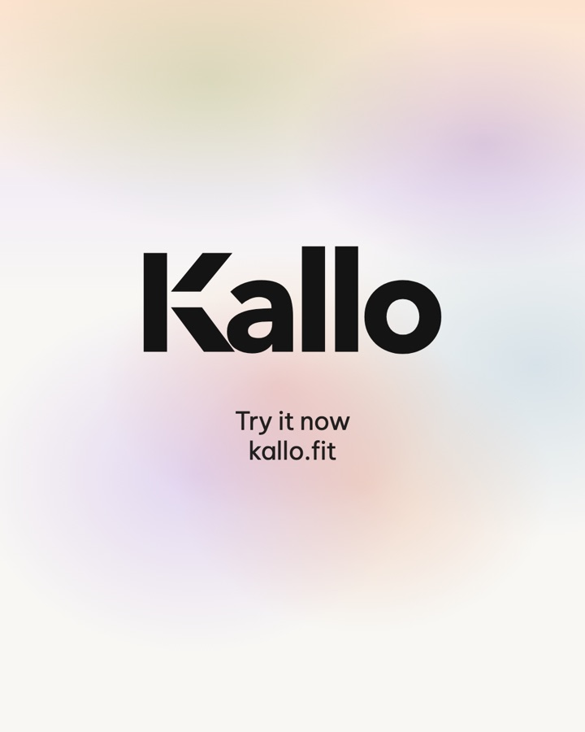
"Try it now" / "kallo.fit" under the wordmark.
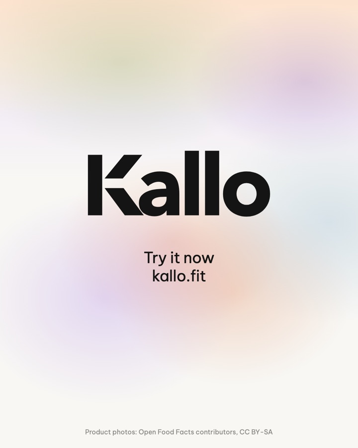
Held.